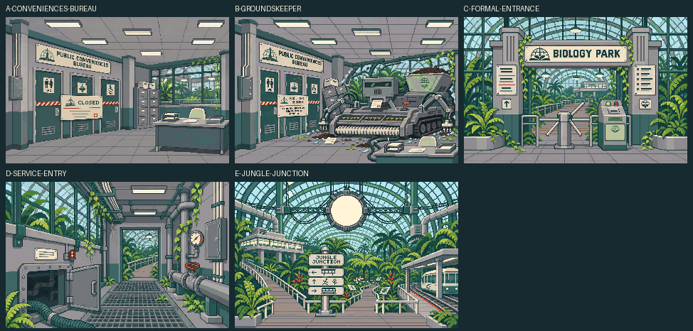

Before / after comparisons
A retains the large Public Conveniences Bureau title and replaces the small notice with CLOSED and deliberate nonletter administrative marks. C replaces tiny pseudo-words with bars and checkboxes. E reads JUNGLE JUNCTION above arrows and pictograms for the tower, walking exhibits and tram.
All comparisons · native PNGAll comparisons · exact 4× PNGPNG SHA256 hashesPermitted regionsReproducible pixel recipe


| Scene | Changed pixels | Changes outside signs |
|---|
Five scenes with the revised signs

Accepted originals, unchanged
The mechanical Groundskeeper scene, service route and both portrait layers still reference the original Batch 1 PNGs. No copies replace their canonical review files.
Original portrait composite · nativeOriginal portrait composite · 4×560 preserved original PNG/story/game hashes


Checks and provenance
Three RGB 314×206 revision candidates use only existing palette colors. Each 4×4 preview block reproduces its native pixel. The allowed masks are white only inside the permitted sign interiors; the changed masks are white only where the final pixels differ. Red overlays highlight the actual changes.
The first native label study is preserved under iterations/01-label-study/. The current deliverables use pictogram-only route plates. Every accepted PNG and raw image-generation source from commit e9dff9cb9c06ec38cda0b29cff8141df4263fb40 remains byte-identical.